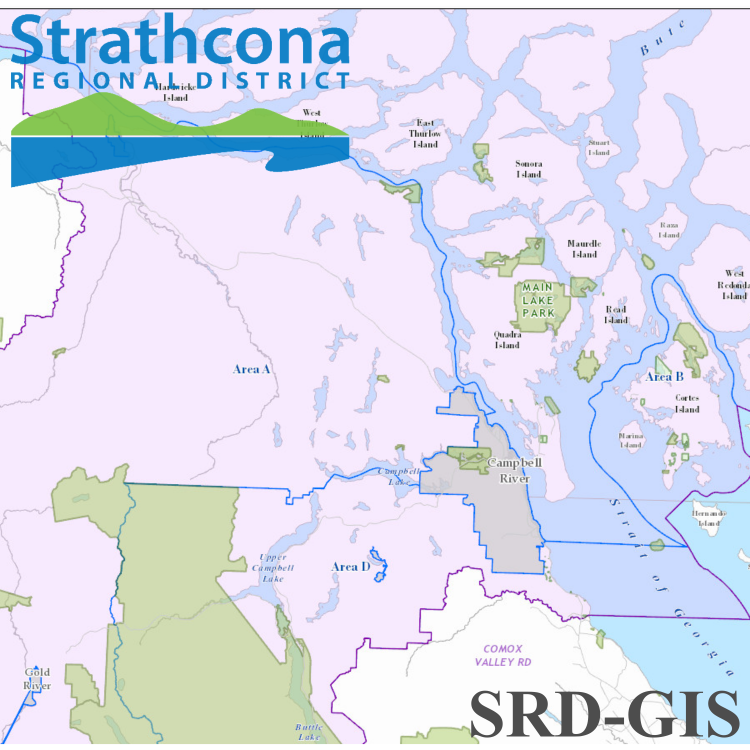
Why???
got 5 mins?
HEALTH:
cycling is good for your body
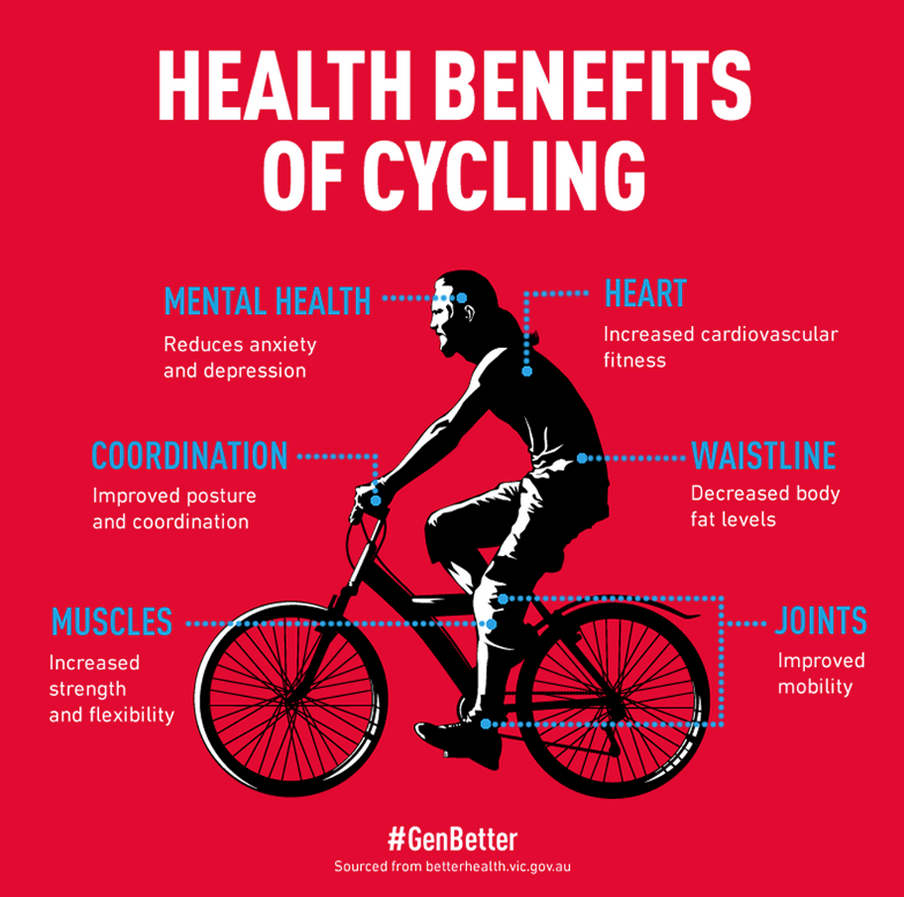
GREEN:
cycling is good for the environment
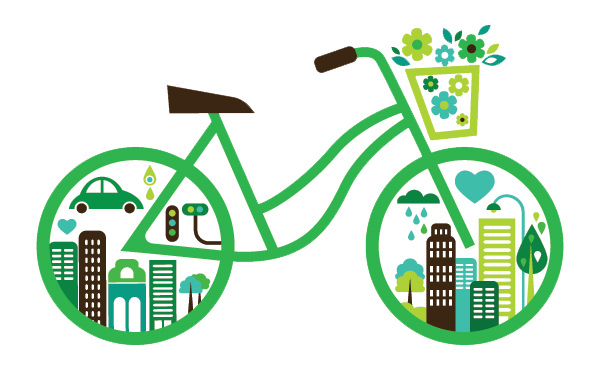

FUN:Riding a bike is
FUNRemember the joy of learning?

MONEY:
cycling is far cheaper than any other form of transportation
OUTSIDE:
cycling gets you outside and puts you in direct contact with the elements around you
GEOMETRY:
cycling is for everyone - bikes are sized for all shapes and sizes
SIMPLICITY:
cycling is simple
once you learn, you never forget
TRANSITION:
cycling allows for space and time to shift gears btwn work and home
WANNA TRY?
Bike to Work Week aims to motivate folks to try cycle commuting
You too can join the SRD cycle team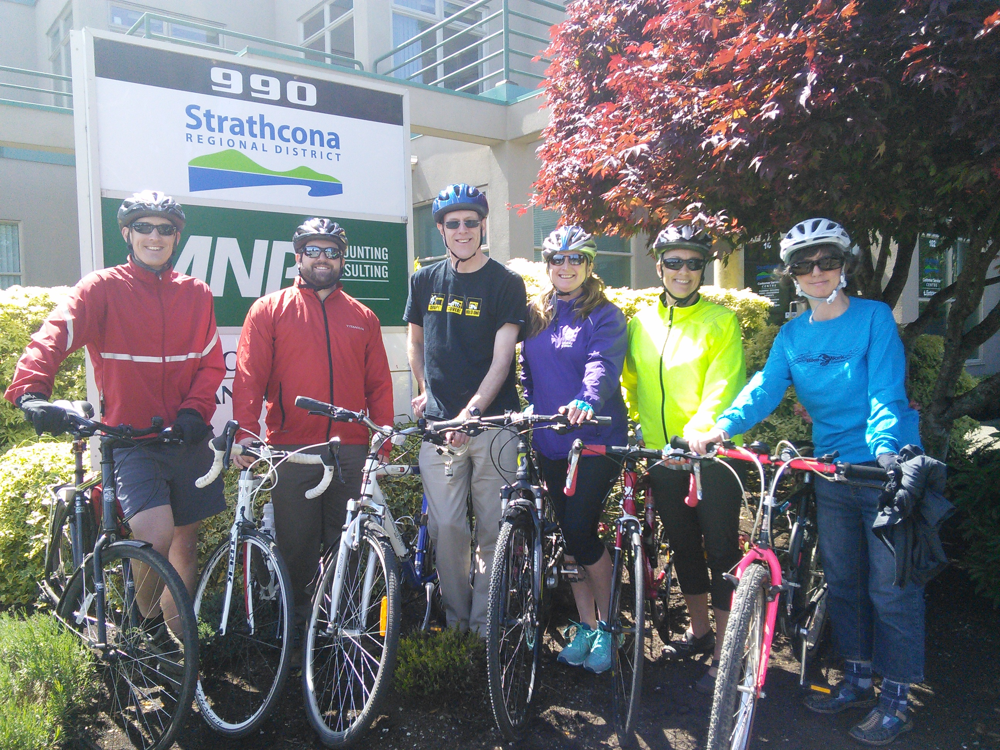
Bike to Work Week
starts Monday and runs until June 5. This is the year's best shot at trying cycle commuting
There will be awesome events throughout the week
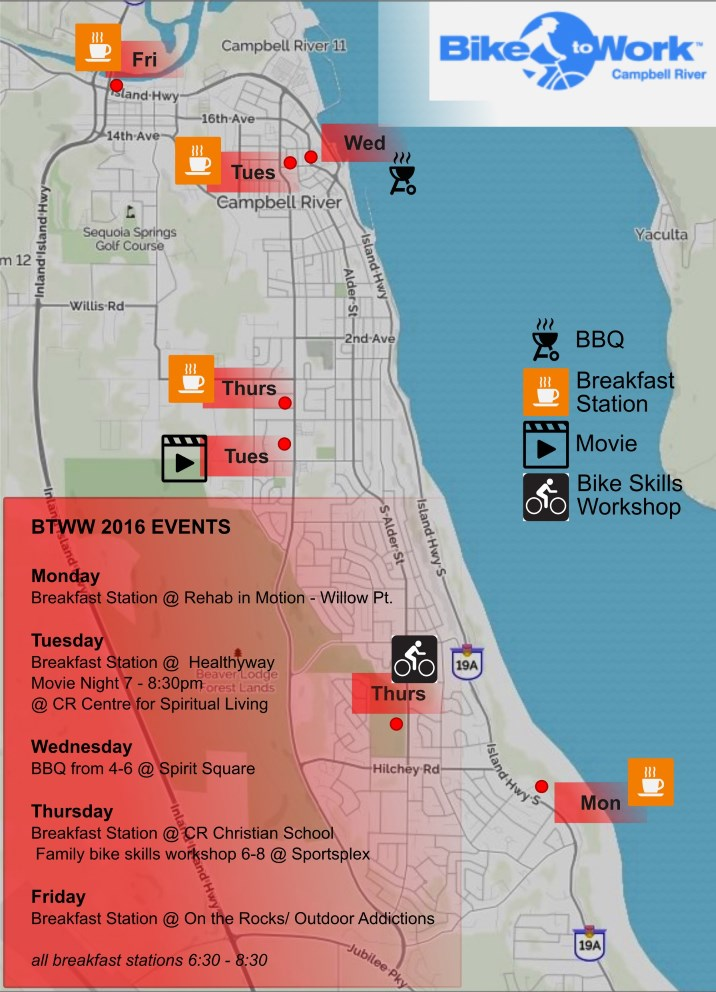
All events will have prize giveaways of super great bike swag
Not into
Bike to Work ?
- remember -
there's so much
GREAT LOCAL riding in this
REGION
Snowden Forest trails

Beaver Lodge
trailsCCR incorporates long-term bicycle plans into their transportation planning
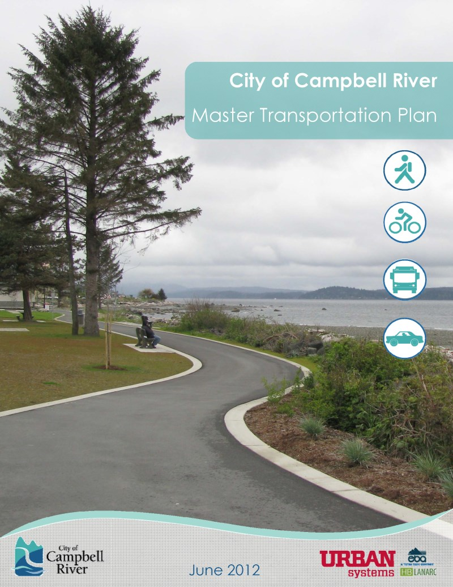
will Campbell River build a bike park?
there's a BUZZ about BIKE Culture in this community of recent
+ a new brew pub set to open mere steps from our office
REMEMBER:
cycling is best practised with safety in mind.
Do: Wear a helmet - always
Do: Follow the rules of the road
Do: Ensure you use a ROAD WORTHY bike
Do: Always, always err on the side of CAUTION
don't presume cars will give you wide berth or right of way
Do: Consider giving cycle commuting a try - you may find you LOVE IT
you may find it hugely beneficial to your health, mental state, overall being and it may hugely improve your professional productivity
meanwhile, in the
work context...
SRD-GIS has been doing stuff
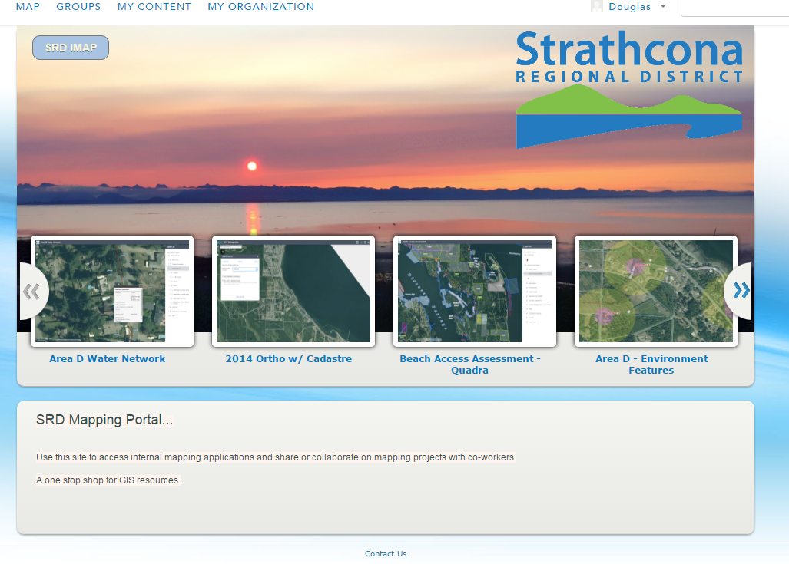
Portal for ArcGIS
a local application for GIS dev enabling internal app dev
Area D Water Infrastructure app
shows water network and some fancy stuff
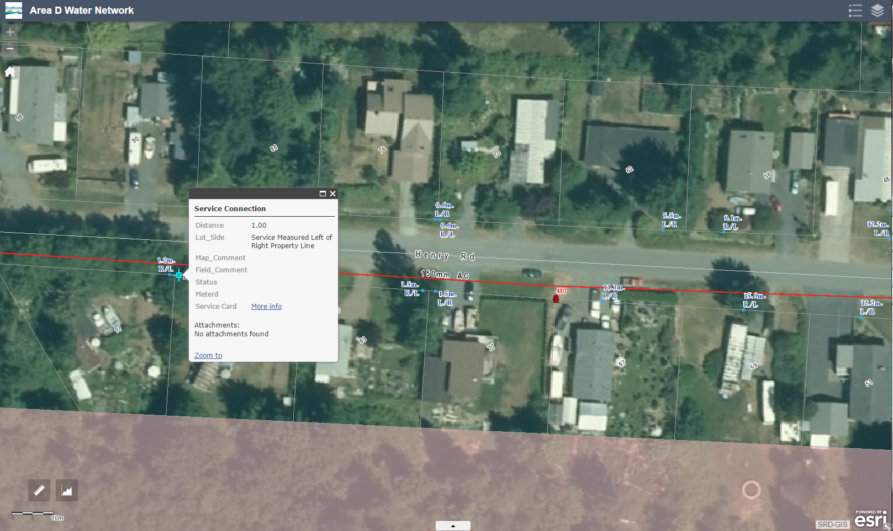
Graphing/Summarizing features
future usage for
asset management
Mobile data collection
tested/used for beach access assessments - Cortes, Quadra, Area D.
Test Results: SUCCESS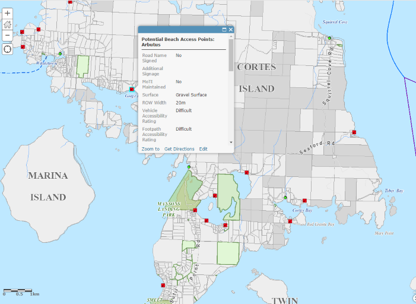
esp. useful in remote, rural areas with no cell/WiFi coverage
improved efficiencies in the field with mobile devices = more time for lunch in beautiful places
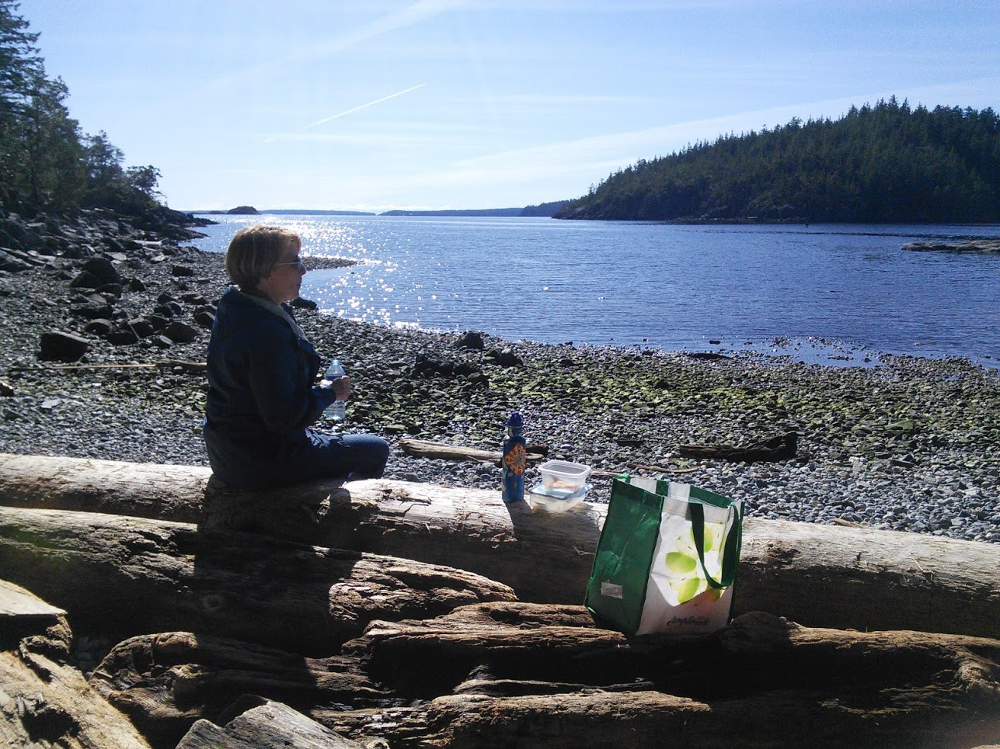
LiDAR
Area D
awesome
Our
topography data went from
this
: 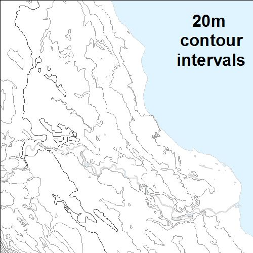
to
this
:

GIS service provision
part of municipal service agreements
- Tahsis
- Sayward soon
StoryMapsa visual
presentation tool and an effective
communication piece
Department Branding
universal iconography across web platforms
SRD GIS gravatar
SRD GIS dreams + aspirations:
- Open Data initiatives
- sayonara iMap
- web map dev
- better cadastre
- Open Source GIS
- schedule for Orthophoto acquisition
- UAV: eye candy for tourism/SRD promo + GIS integration
FIN